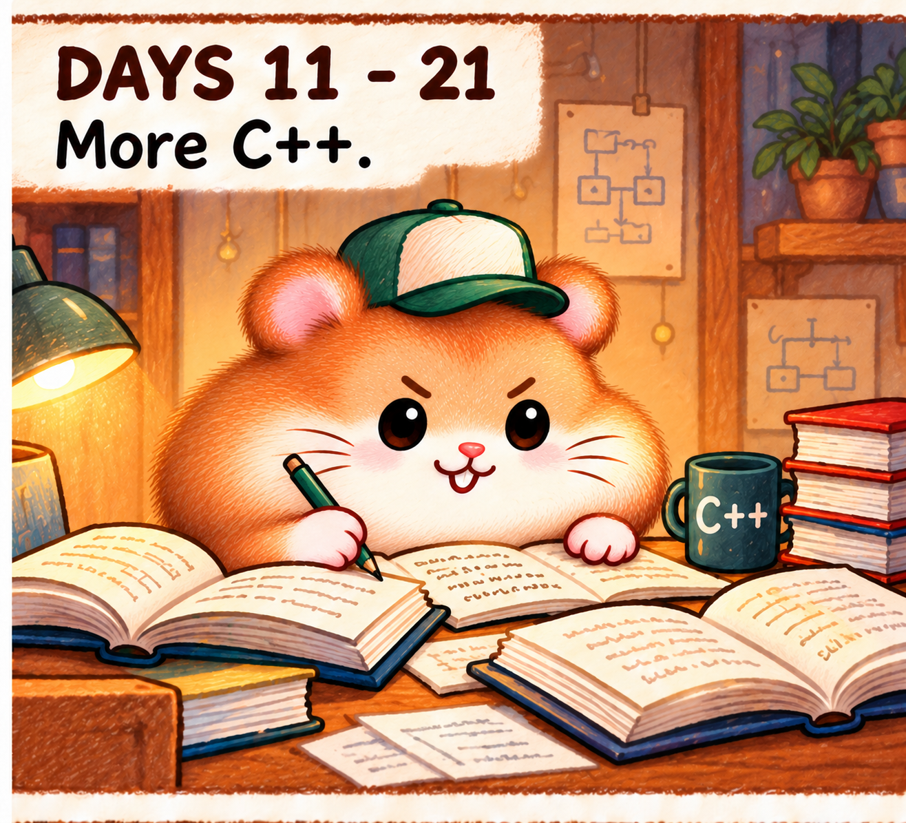

<!doctype html><html lang="zh-CN"><meta charset="utf-8"><meta name="viewport" content="width=device-width,initial-scale=1"><title>第二幕 · 继续学C++</title><style>body{margin:24px;background:#181d21;color:#eee8dc;font:16px/1.6 system-ui}main{max-width:1100px;margin:auto}h1{font-size:24px}.pair{display:grid;grid-template-columns:1fr 1fr;gap:24px}figure{margin:0}canvas,img{display:block;width:100%;border-radius:8px}figcaption{margin-top:12px}.controls{display:flex;gap:12px;align-items:center;margin-top:20px}input{flex:1;min-width:30px}button{font:inherit;padding:5px 12px}a{color:#b6d8cb}@media(max-width:700px){.pair{grid-template-columns:1fr}}</style><main><h1>第二幕 · Days 11–21：More C++</h1><p>连续写三小段笔记，然后停笔。先看手腕和笔尖的运动是否自然；第一幕保持不变。</p><div class="pair"><figure><canvas id="stage" aria-label="仓鼠伏案写C++笔记"></canvas><figcaption>第二幕动作候选</figcaption></figure><figure><figcaption>静态原画 · 左侧台灯</figcaption></figure></div><div class="controls"><button id="play">播放</button><button id="replay">重播</button><input id="seek" type="range" min="0" max="3.2" step="0.01" value="0" aria-label="动作进度"><output id="time">0.00 s</output></div><p id="status">正在加载…</p><p><a href="../index.html">查看完整主页</a> · <a href="../reading-motion/index.html">第一幕</a></p></main><script src="shot.js"></script><script>
const shot=createWritingShot(document.getElementById('stage'),'');const seek=document.getElementById('seek'),play=document.getElementById('play'),out=document.getElementById('time');const reduced=matchMedia('(prefers-reduced-motion: reduce)');let elapsed=0,playing=!reduced.matches,last=null,loaded=false;
function draw(){shot.draw(elapsed);seek.value=elapsed;out.value=elapsed.toFixed(2)+' s';play.textContent=playing?'暂停':'播放';}
play.onclick=()=>{if(elapsed>=3.2)elapsed=0;playing=!playing;last=null;draw();};document.getElementById('replay').onclick=()=>{elapsed=0;playing=true;last=null;draw();};seek.oninput=()=>{elapsed=+seek.value;playing=false;last=null;draw();};document.addEventListener('visibilitychange',()=>last=null);reduced.addEventListener('change',()=>{if(reduced.matches){playing=false;draw();}});
shot.ready.then(()=>{loaded=true;draw();document.getElementById('status').textContent='原画与动作候选，尚待评价；毛发细腻程度仍与第一幕有差别。';}).catch(()=>document.getElementById('status').textContent='原画加载失败。');requestAnimationFrame(function tick(now){if(loaded&&playing&&!document.hidden){if(last!==null)elapsed=Math.min(3.2,elapsed+(now-last)/1000);if(elapsed===3.2)playing=false;draw();}last=now;requestAnimationFrame(tick);});
</script></html>
